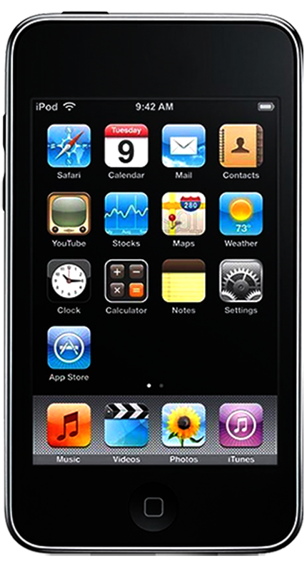
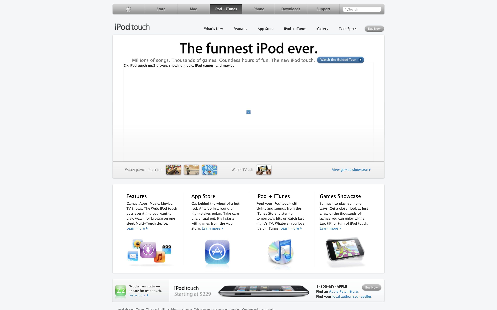

The funniest iPod ever.
Millions of songs. Thousands of games. Countless hours of fun. The new iPod touch.
iPod touch (2nd generation) features a 3.5-inch (diagonal) widescreen Multi-Touch display and 8 GB, 16 GB, or 32 GB flash drive. You can distinguish the iPod touch (2nd generation) from the previous model by its contoured design and oval shaped antennae cover in the back upper left corner.
 